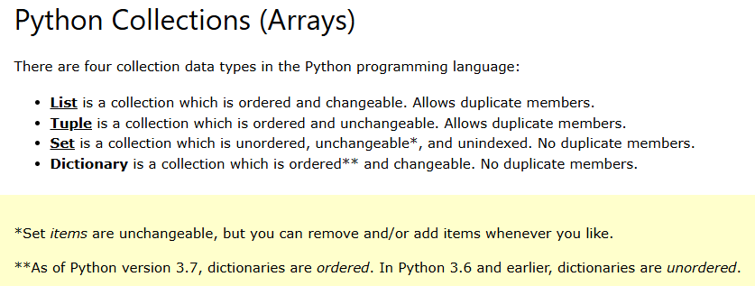
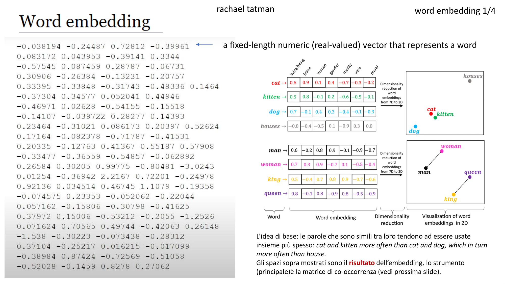
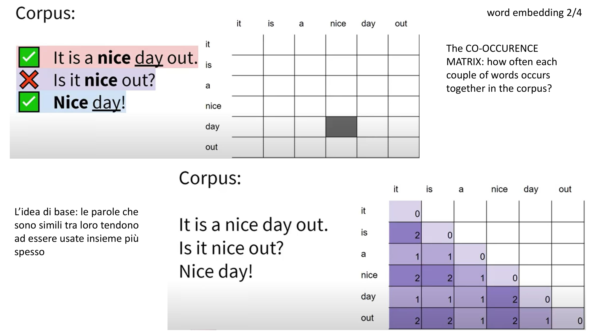
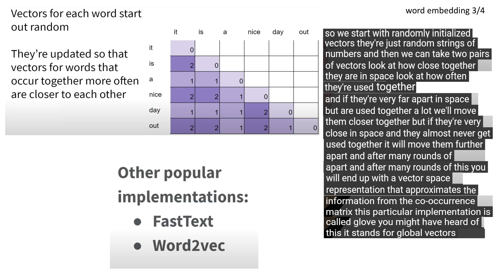
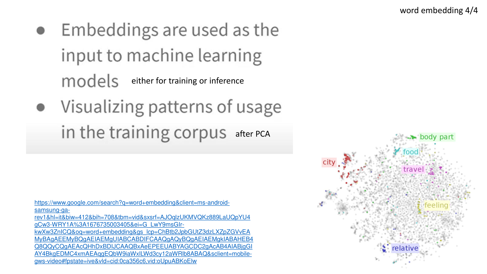
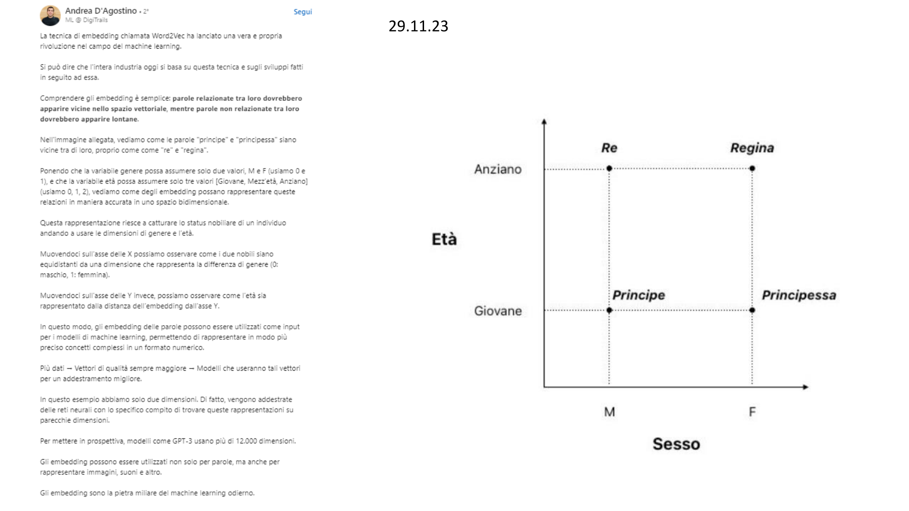

Pre-elaborazione di testi > Copyright Antonio Piemontese 2026 (inspired to Sebastian Raschka’s work).
Questo capitolo tratta: * la preparazione del testo per l’addestramento di modelli linguistici di grandi dimensioni (LLM) * la suddivisione del testo in token di parole e sottoparole * la codifica di coppie di byte come metodo più avanzato per tokenizzare il testo * esempi di addestramento tramite campionamento con un approccio a finestra scorrevole * e la conversione dei token in vettori embedded che alimentano il training di un modello linguistico di grandi dimensioni (LLM).
Nota didattica: concetti semplici, tranne i capitolo 6 e 7, a cui dedicare più tempo.
Linguaggi usati nel notebook:
Legenda delle icone (standard) usate nel notebook:
👉 punto di attenzione, il “succo” 📌 nota / inizio di una nota 📦 punto elenco importante 📊 dati/numeri 🔹 punto elenco normale ⭐ punto elenco importante ✅ punto risolto, positivo ❌ punto negativo, da evitare ⚠️ attenzione, warning, allarme 💡 idea chiave 🧠 idea intuitiva 📝 sintesi / bottom-line ⟶ conseguenza, effetto, passo successivo
🧩 NOVITÀ: gli “innesti gpt-oss”
Nell’agosto 2025 OpenAI ha rilasciato gpt-oss-120b e gpt-oss-20b, i suoi primi modelli open-weight (cioè “a pesi aperti”: i pesi sono liberamente scaricabili e utilizzabili, con licenza Apache 2.0) dopo GPT-2 (del 2019!).
In questo notebook, e nei successivi, troveremo alcune celle come questa — su sfondo azzurro e contrassegnate dal simbolo 🧩 — che chiamiamo innesti gpt-oss: nei punti di contatto con il programma del corso, anticipano come cambia in gpt-oss il concetto appena studiato su GPT-2, di volta in volta.
Gli innesti sono letture a margine: il filo del corso resta GPT-2, e il confronto completo tra le due architetture sarà sviluppato nel modulo dedicato a gpt-oss (notebook 8). Un ottimo riferimento esterno è l’articolo “From GPT-2 to gpt-oss: Analyzing the Architectural Advances” di Sebastian Raschka, l’autore a cui questo corso è ispirato.
Package usati in questo notebook DA INSTALLARE (questa cella iniziale può dare errore in Google Colab - rieseguirla, eventualmente chiudendo il notebook e ricaricandolo): - numpy - pandas - matplotlib - tiktoken: una libreria open source sviluppata da OpenAI che implementa un tokenizer Byte Pair Encoding (BPE) veloce ed efficiente, progettato specificamente per essere utilizzato con i modelli linguistici di OpenAI (come GPT-3.5, GPT-4 e GPT-4o) - pymupdf: una potente libreria Python ad alte prestazioni creata per leggere, estrarre, manipolare e convertire documenti PDF e altri formati come XPS, EPUB e immagini.
from importlib.metadata import version # importlib.metadata is in the standard library for Python >= 3.8. No installation is required. # For Python < 3.8, you can install the backport with `pip install importlib-metadata`.print("torch version:", version("torch"))print("tiktoken version:", version("tiktoken"))
Questo notebook copre la preparazione dei dati ed il campionamento, in modo da rendere i dati in input “pronti” per gli LLM. Vedi il box tratteggiato in figura qui sotto.
Gli embedding delle parole
Non c’è codice in questa sezione, solo spiegazione dei concetti.
CI sono molte forme di embedding - in questo corso ci focalizzeremo sull’embedding testuale
Gli LLM lavorano con gli embedding in spazi ad alta dimensione (ad esempio migliaia di dimensioni). Poichè non possiamo visualizzare tali spazi (gli esseri umani pensano solo in 1,2 o 3 dimensioni), la figura seguente illustra uno spazio di embedding a due dimensioni (più comprensibile e visualizzabile).
Tokenizzare il testo
In questa sezione tokenizziamo il testo, cioè lo dividiamo in pezzi più piccoli (token, appunto), quali parole, pezzi di parola o caratteri di punteggiatura.
Carichiamo un testo di prova: The Verdict by Edith Wharton che è un racconto disponibile pubblicamente (su Wikisource) e facilmente traducibile in italiano (in Chrome) dal menù del tasto destro del mouse.
import os # fa parte della libreria standard di Python, non richiede installazioneimport urllib.request # fa parte della libreria standard di Python, non richiede installazione# definizione della url e del file-path:ifnot os.path.exists("the-verdict.txt"): url = ("https://raw.githubusercontent.com/rasbt/""LLMs-from-scratch/main/ch02/01_main-chapter-code/""the-verdict.txt") file_path ="the-verdict.txt" urllib.request.urlretrieve(url, file_path)
Se l’esecuzione della cella precedente dà l’errore ssl.SSLCertVerificationError, può essere dovuto semplicemente alla vecchia versione di Python che si sta usando. Qui maggiori informazioni in merito.
# lettura del racconto:withopen("the-verdict.txt", "r", encoding="utf-8") as f: raw_text = f.read()
Il nostro racconto è ora contenuto nella variabile raw_text, che è una stringa Python:
type(raw_text)
str
print("Il numero totale dei caratteri è: ", len(raw_text))print("Questi i primi 100 caratteri del testo: ",raw_text[:99])
Il numero totale dei caratteri è: 20479
Questi i primi 100 caratteri del testo: I HAD always thought Jack Gisburn rather a cheap genius--though a good fellow enough--so it was no
Il nostro obiettivo è tokenizzare questo testo e poi convertirlo in embedding testuali (per poterlo così dare in input ad un LLM).
Realizziamo un semplice tokenizzatorebasato su una frase campione, che possiamo poi applicare al racconto in oggetto (o ad altri testi ancora).
La seguente espressione regolare individua le parole e le separa con uno spazio bianco.
import re # 're' sta per 'regular expression', cioè è il package che elabora le stringhe alfanumeriche # tramite espressioni regolari.# fa parte della libreria standard di Python, non richiede installazionetext ="Hello, world. This, is a test."result = re.split(r'(\s)', text)print(result)
Ok, l’espressione regolare ora funziona abbastanza bene. Vogliamo che individui anche altri tipi di punteggiatura frequente,ad esempio il punto interrogativo. Modifichiamo la frase campione (ora contiene un punto interrogativo) e anche l’espressione regolare:
text ="Hello, world. Is this-- a test?"result = re.split(r'([,.:;?_!"()\']|--|\s)', text)result = [item.strip() for item in result if item.strip()]print(result)
Ok, ora possiamo applicare questo semplice tokenizzatore al nostro racconto (raw_text), applicandogli prima l’espressione regolare (il tokenizzatore) - si ottiene così la listapreprocessed - e poi eliminando le stringhe vuote, come prima. Riscriviamo sopra la stessa lista.
preprocessed = re.split(r'([,.:;?_!"()\']|--|\s)', raw_text)print(preprocessed[:30]) # i primi 30 caratteritype(preprocessed) # la classe
Poichè gli LLM, ed i computer in generale, lavorano con i numeri, il prossimo passo è convertire i token prima individuati in token numerici (che siano poi trasformabili in embedding testuale).
Con questi token numerici possiamo creare un dizionario (o vocabolario) formato da tutti i token univoci (sul testo del racconto, non sull’esempio della figura), che chiamiamo all_words, ordinato alfabeticamente (con la funzione sorted):
Per un commento dettagliato della precedente istruzione Python vedi questa chat di chatGPT.
vocab_size =len(all_words)print(vocab_size) # la dimensione del vocabolario
1130
Il vocabolario, come si vede, è composto da 1130 token (ancora testuali).
all_words è sempre una lista (essendo semplicemente un sort univoco della lista raw_text).
Python ha un tipo dati più adatto a questi casi: un dizionario, definibile per elencazione degli elementi dentro le parentesi graffe.
vocab = {token:integer for integer,token inenumerate(all_words)}# vocab # --> output molto lungo
Per un commento dettagliato della precedente istruzione Python vedi questa chat di chatGPT.
Qui sotto una nota comparativa sul data type python dictionary che spiega i passaggi fatti prima: * preprocessed era una lista Python (non univoca e non ordinata), contenente il racconto
* all_words era una lista Python (univoca grazie a set ed ordinata alfabeticamente grazie a sorted); si notino in realtà le due tasformazioni di data-type “nascoste” (in merito vedi anche questa chat di chatGPT): * set trasforma la lista preprocessed in un data type set * la funzione sorted trasforma il set nuovamente in una lista!
* vocab è ora un dizionario Python (univoco ed ordinato)

Il seguente ciclo for estrae i primi 20 elementi del dizionario:
type(vocab.items) # 'items' è un attributo del datatype python 'dictionary'
builtin_function_or_method
for i, item inenumerate(vocab.items()):print(item)if i >=20:break
La figura seguente illustra la tokenizzazione di un breve testo campione usando un semplice vocabolario (che immaginiamo sia stato creato precedentemente). Il testo campione, tradotto in italiano, è: Il cane marrone inseguiva giocosamente la volpe veloce.
Ed infine mettiamo tutti insieme i pezzi di codice visti sino a qui e definiamo una classe tokenizzatore:
class SimpleTokenizerV1:# il metodo costruttoredef__init__(self, vocab):self.str_to_int = vocabself.int_to_str = {i:s for s,i in vocab.items()}# il metodo che trasforma il testo in token iddef encode(self, text): preprocessed = re.split(r'([,.:;?_!"()\']|--|\s)', text) preprocessed = [ item.strip() for item in preprocessed if item.strip() ] ids = [self.str_to_int[s] for s in preprocessed]return ids# il metodo inverso, che trasforma i token id in testodef decode(self, ids): text =" ".join([self.int_to_str[i] for i in ids])# Replace spaces before the specified punctuations text = re.sub(r'\s+([,.?!"()\'])', r'\1', text)return text
Possiamo usare il tokenizzatore per codificare (encode) il testo in token id numerici (interi).
Questi numeri interi saranno successivamente “embedded” (“incorporati”) come input all’LLM.
Mettiamo alla prova il nostro tokenizzatore SimpleTokenizerV1, in questo modo: * creiamo un’istanza della classe, di nome tokenizer, fornendo come argomento il vocabolario che abbiamo creato prima (vocab) sul racconto. * generiamo un testo da tokenizzare (text) * invochiamo il metodo encode del tokenizzatore applicato a questo testo * esaminiamo i token ID generati (ids)
tokenizer = SimpleTokenizerV1(vocab)text =""""It's the last he painted, you know," Mrs. Gisburn said with pardonable pride."""ids = tokenizer.encode(text)print(ids)
Possiamo trasformare all’indietro i token ID in testo, invocando il metodo decode del tokenizzatore (applicato agli ids).
tokenizer.decode(ids)
'" It\' s the last he painted, you know," Mrs. Gisburn said with pardonable pride.'
Tutto in un solo colpo, ora (andata e ritorno in una singola istruzione).
tokenizer.decode(tokenizer.encode(text))
'" It\' s the last he painted, you know," Mrs. Gisburn said with pardonable pride.'
Token di contesto speciali
E’ utile aggiungere al dizionario / vocabolario alcuni token speciali per le parole sconosciute e la fine testo.
Note: * alcuni tokenizzatori usano (cioè aggiungono al vocabolario) questi token speciali per aiutare gli LLM con informazioni ulteriori
* i principali token speciali sono:
* [BOS] (Beginning Of Sequence): indica l’inizio del testo
* [EOS] (End Of Sequence): indica la fine del testo - si usa in genere questo token speciale per concatenare diversi testi non collegati tra loro, come ad esempio due differenti voci di Wikipedia o due differenti libri
* [PAD] (padding): utile se alleniamo l’LLM con un batch size > 1 (vedremo presto cosa questo argomento significhi). Nel training possiamo allora usare diversi testi, anche di differente lunghezza; con il token [PAD] possiamo infatti imbottire (‘pad’, appunto) i testi più brevi sino a raggiungere la lunghezza del testo più lungo, in modo che tutti i testi abbiamo la stessa lunghezza.
* [UNK] (UNKnown): rappresenta una parola “sconosciuta” in quanto non presente nel vocabolario
* GPT-2 non utilizza nessuno di questi token speciali, solo il token <|endoftext|> per ridurre la complessità, che è analogo al token [EOS] visto prima
* GPT-2 usa il token <|endoftext|>anche per il padding. Infatti con GPT-2 in genere, durante l’allenamento, si utilizza una maschera applicata agli input batch, e dunque i token imbottiti non servono (come vedremo durante il corso)
* per le parole sconosciute, GPT-2 non usa il token [UNK]. GPT-2, infatti, usa un tokenizzatore di tipo byte-pair encoding (BPE), che suddivide le parole in pezzi (lo vedremo più avanti)
🧩 E in gpt-oss? — I token speciali
In gpt-oss il token <|endoftext|> esiste ancora, ma cambia il suo ID: nel tokenizzatore di GPT-2 (che useremo tra poco con tiktoken) vale 50256, nel nuovo vocabolario di gpt-oss vale 199999.
Soprattutto, gpt-oss aggiunge una famiglia di token speciali “strutturali”, perché i suoi modelli sono addestrati sul formato Harmony[1]: un formato di conversazione che delimita i ruoli del dialogo (System > Developer > User > Assistant > Tool) e i canali dell’output del modello — analysis per il ragionamento, commentary per le chiamate a strumenti, final per la risposta destinata all’utente.
Token come <|start|>, <|message|>, <|channel|>, <|end|>, <|return|> e <|call|> servono proprio a marcare questi confini. Li useremo nel modulo dedicato a gpt-oss; per ora basta notare che l’idea dei token speciali, qui introdotta nella sua forma minima, nei modelli moderni si è molto arricchita.
Vediamo dunque come si usa il token <|endoftext|> per concatenare testi differenti, non collegati tra loro.
Vediamo cosa succede se cerchiamo di tokenizzare il seguente testo (sempre con il tokenizzatore costruito prima):
# DA' ERRORE!tokenizer = SimpleTokenizerV1(vocab)text ="Hello, do you like tea. Is this-- a test?"tokenizer.encode(text) # --> errore!
---------------------------------------------------------------------------KeyError Traceback (most recent call last)
CellIn[64], line 6 2 tokenizer = SimpleTokenizerV1(vocab)
3 4 text = "Hello, do you like tea. Is this-- a test?" 5----> 6 tokenizer.encode(text) # --> errore!CellIn[60], line 15, in SimpleTokenizerV1.encode(self, text) 11 12 preprocessed = [
13 item.strip() for item in preprocessed if item.strip()
14 ]
---> 15 ids = [self.str_to_int[s] for s in preprocessed]
16return ids
CellIn[60], line 15, in SimpleTokenizerV1.encode.<locals>.<listcomp>(.0)---> 15def encode(self, text):
16 preprocessed = re.split(r'([,.:;?_!"()\']|--|\s)', text)
17 18 preprocessed = [
KeyError: 'Hello'
La cella precedente dà errore perchè la parola “Hello” non fa parte del vocabolario.
Per rappresentare queste parole sconosciute, abbiamo detto che in genere (non in GPT-2) il tokenizzatore aggiunge al vocabolario il token speciale <|unk|>. Facciamolo anche noi.
Aggiungiamo al nostro tokenizzatore anche il token "<|endoftext|>", che - come detto prima - è usato in GPT-2 per denotare la fine del testo ed anche per il padding.
Nota Python: Nella cella seguente il punto di partenza è sempre la lista preprocessed. Come sappiamo da prima, set trasforma la lista preprocessed in un data type set (anch’esso built-in come list). Quindi la funzione sorted ri-trasforma il set in una lista (oltre ad ordinare gli elementi alfabeticamente, ovviamente). Qui sotto, per chiarezza, si è aggiunto list, per esplicitare la conversione di datatype (ma non è necessario, se non per chiarezza):
all_tokens =sorted(list(set(preprocessed)))all_tokens.extend(["<|endoftext|>", "<|unk|>"]) # l'aggiunta dei due token alla listavocab = {token:integer for integer,token inenumerate(all_tokens)} # la solita creazione del vocabolario
La nuova lista si chiama ora all_tokens, e non più all_words, in omaggio al fatto che ora contiene due token speciali, che non sono parole o segni di punteggiatura.
len(vocab.items())
1132
Gli elementi del vocabolario ora sono 1132, non più 1130.
Vediamo gli ultimi 5:
for i, item inenumerate(list(vocab.items())[-5:]):print(item)
Gli ultimi due token correttamente sono i due token speciali che abbiamo aggiunto al vocabolario.
Dobbiamo quindi modificare il tokenizzatore con questa aggiunta. Creiamone una versione V2:
class SimpleTokenizerV2:def__init__(self, vocab):self.str_to_int = vocabself.int_to_str = { i:s for s,i in vocab.items()}def encode(self, text): preprocessed = re.split(r'([,.:;?_!"()\']|--|\s)', text) preprocessed = [item.strip() for item in preprocessed if item.strip()] preprocessed = [ # NUOVA riga. item if item inself.str_to_int # rimpiazza le parole sconosciuteelse"<|unk|>"for item in preprocessed # con il token "UNK" ] ids = [self.str_to_int[s] for s in preprocessed]return idsdef decode(self, ids): text =" ".join([self.int_to_str[i] for i in ids])# Replace spaces before the specified punctuations text = re.sub(r'\s+([,.:;?!"()\'])', r'\1', text) # riga MODIFICATA: rimpiazza gli spazi prima# della punteggiatura indicatareturn text
Proviamo il nuovo tokenizzatore V2. Usiamo un testo campione che è la concatenazione di due frasi indipendenti e non collegate:
text1 ="Hello, do you like tea?"text2 ="In the sunlit terraces of the palace."text =" <|endoftext|> ".join((text1, text2))print(text)
Hello, do you like tea? <|endoftext|> In the sunlit terraces of the palace.
Nelle due frasi abbiamo volutamente inserito due parole NON presenti nel racconto: “hello” e “palace” (verificare alla url di Wikisource del racconto, fornita prima). Abbiamo anche separato le due frasi con il token end-of-text.
Creiamo un’istanza della nuova classe SimpleTokenizerV2, anch’essa di nome tokenizer, fornendo come argomento il medesimo vocabolario del racconto (vocab) e invochiamo il metodo encode sul testo campione concatenato:
Vediamo che la lista dei token contiene 2 token 1131, per parole sconosciute, ed un token 1130, circa a metà della lista, per l’end-of-text della prima frase.
Come verifica di sicurezza, applichiamo a ritroso il metodo decode:
tokenizer.decode(tokenizer.encode(text))
'<|unk|>, do you like tea? <|endoftext|> In the sunlit terraces of the <|unk|>.'
BytePair encoding
GPT-2 usava la codifica BytePair Encoding (BPE) per il suo tokenizzatore.
BPE permette al modello di suddividere le parole che NON sono nel suo vocabolario predefinito in pezzi di parole (subword units) od anche caratteri individuali, permettendo così il trattamento delle parole sconosciute.
Il vocabolario predefinito del tokenizzatore BPE ha 50.257 parole. Tuttavia, se il vocabolario ad esempio non ha la parola unfamiliarword, BPE la può tokenizzare come [“unfam”, “iliar”, “word”] o qualche altra suddivisione, a seconda dell’allenamento del BPE.
Il tokenizzatore BPE originario è disponibile qui.
In questo notebook noi useremo tiktoken, il tokenizzatore BPE open-source di OpenAI, che implementa il suo algoritmo chiave in Rust per migliorare gli aspetti computazionali.
E’ disponibile un altro notebook che confronta queste due versioni (quella originale e qualle open-source in Rust) –> tiktoken è risultato circa 5 volte più veloce (su un testo campione).
import importlib # questo package fa parte della libreria standard di Python, non richiede installazioneprint("tiktoken version:", importlib.metadata.version("tiktoken"))
tiktoken version: 0.14.0
📌 Nota su importlib
importlib è parte ufficiale della libreria standard di Python, dunque non richiede installazione. [1]
A cosa serve * Implementa l’istruzione di importazione (import) in puro Python. * Permette di importare i moduli in modo dinamico usando stringhe di testo. * Gestisce il reload (ricaricamento) dei moduli in esecuzione senza riavviare l’interprete. * Offre strumenti per accedere alle risorse interne dei pacchetti (importlib.resources) e verificarne le specifiche (importlib.util). [1, 2, 3, 4]
Funzioni principali
importlib.import_module(name): importa un modulo a partire dal suo nome come stringa.
importlib.reload(module): ricarica un modulo già importato in precedenza. [1, 5]
Si può consultare la guida ufficiale completa nella documentazione di importlib su Python. [6]
L’istanziazione del tokenizzatore; come sempre fatto finora, anche qui chiamiamo l’oggetto per semplicità tokenizer.
import tiktoken # questo package non fa parte della libreria standard di Python, quindi va installatotokenizer = tiktoken.get_encoding("gpt2")
Facciamo una prima prova del nuovo tokenizzatore con un testo campione che contiene end-of-text e parole sconosciute. Anche tiktoken mette a disposizione i due metodi base encode e decode. Proviamo la trasformazione del testo campione in token id, e la loro riconversione in testo (per verifica, sempre utile).
text = ("Hello, do you like tea? <|endoftext|> In the sunlit terraces"" of pippo.")integers = tokenizer.encode(text, allowed_special={"<|endoftext|>"})print(integers)
Hello, do you like tea? <|endoftext|> In the sunlit terraces of pippo.
Come detto, il tokenizzatore BPE suddivide le parole che NON sono nel suo vocabolario predefinito in pezzi di parole (subword units) od anche caratteri individuali. La seguente figura riporta la suddivisione di un testo in tedesco (akwirw ier = acquario).
🧩 E in gpt-oss? — Il tokenizzatore
GPT-2 usa il tokenizzatore BPE con 50.257 voci che adoperiamo in questo corso. gpt-oss usa invece o200k_harmony: un tokenizzatore BPE molto più grande, con 201.088 voci, costruito come estensione (superset) di o200k_base — il tokenizzatore di GPT-4o — a cui sono aggiunti i token speciali del formato Harmony (vedi l’innesto precedente, nella sezione sui token speciali).
Anche o200k_harmony è open-source ed è disponibile nello stesso packagetiktoken che stiamo già usando (serve tiktoken >= 0.11, la versione rilasciata insieme a gpt-oss): basta cambiare il nome dell’encoding.
Conseguenze pratiche di un vocabolario ~4 volte più grande: a parità di testo si producono meno token (il testo è “compresso” meglio, specialmente nelle lingue diverse dall’inglese), ma la tabella di embedding diventa molto più grande (ne riparliamo nell’innesto della sezione sugli embedding).
La cella di codice seguente (facoltativa, anch’essa un innesto) mette a confronto i due tokenizzatori sullo stesso testo campione.
# verifica della versione di tiktoken installataimport tiktokenprint(tiktoken.__version__)
0.14.0
# ===== 🧩 INNESTO gpt-oss (cella FACOLTATIVA) =====# Richiede tiktoken >= 0.11 (la versione rilasciata insieme a gpt-oss, agosto 2025).# Alla prima esecuzione tiktoken scarica da internet le tabelle dell'encoding "o200k_harmony".## Confrontiamo la tokenizzazione dello STESSO testo campione con i due tokenizzatori:# - "gpt2" --> il BPE di GPT-2 (50.257 voci), usato in tutto il corso# - "o200k_harmony" --> il tokenizzatore di gpt-oss (201.088 voci)import tiktokentesto = ("Hello, do you like tea? <|endoftext|> In the sunlit terraces"" of pippo.")tok_gpt2 = tiktoken.get_encoding("gpt2") # il "solito" tokenizzatore del corsotok_gptoss = tiktoken.get_encoding("o200k_harmony") # il tokenizzatore di gpt-ossids_gpt2 = tok_gpt2.encode(testo, allowed_special={"<|endoftext|>"})ids_gptoss = tok_gptoss.encode(testo, allowed_special={"<|endoftext|>"})print("GPT-2 :", len(ids_gpt2), "token -->", ids_gpt2)print("gpt-oss :", len(ids_gptoss), "token -->", ids_gptoss)# Si noti, tra le altre cose, il diverso ID del token <|endoftext|>:# 50256 in GPT-2, 199999 in gpt-oss.
1. Il token <|endoftext|> cambia ID ma non ruolo. Nelle due liste occupa la stessa posizione (nono token): 50256 in GPT-2, 199999 in gpt-oss. Il 220 che lo precede in entrambe è lo spazio isolato attorno al token speciale nel testo campione — identico nei due casi.
2. La compressione c’è, ed è tutta sulle parole rare. 18 token contro 20 (−10%): le parole inglesi comuni (“do”, “you”, “like”, “tea”, “the”…) costavano già 1 token ciascuna anche in GPT-2, quindi lì non c’era nulla da guadagnare. Il risparmio arriva dove GPT-2 spezzettava: “terraces” (due pezzi, terr+aces) e l’inventata “pippo” (tre pezzi, p+ipp+o). Si noti in particolare l’ID 173297: un numero del genere in GPT-2 è semplicemente impossibile (il vocabolario finisce a 50.256) — è la prova visiva del vocabolario 4 volte più grande, che lì copre la parola con un pezzo solo. Su inglese semplice il guadagno resta modesto; cresce sensibilmente su lingue diverse dall’inglese e sul codice.
3. Curiosità didattica: punteggiatura e spazio (11, 30, 13, 220) hanno gli stessi ID nei due vocabolari — entrambi i tokenizzatori sono byte-level e condividono la stessa base di partenza.
Ecco la mappa token-per-token, interessante perchè rende visibile a colpo d’occhio dove gpt-oss “fonde” ciò che GPT-2 spezzava:
for i in ids_gptoss: print(i, repr(tok_gptoss.decode([i])))
Campionare i dati di allenamento con una finestra mobile (sliding window)
L’obiettivo originario, e tuttora uno dei principali, dell’allenamento degli LLM è la generazione di nuovo testo, una parola dopo l’altra. Dunque, vogliamo preparare i testi di training del modello per questo obiettivo: la prossima parola di una frase testuale rappresenta il target da prevedere (si chiama perciò self-supervised training). Lo schema è il seguente:
NB. La figura omette la tokenizzazione per maggiore chiarezza. Durante il training, come si vede dalla figura, tutte le parole (token) che sono dopo il target sono mascherate (cioè l’algoritmo non le vede).
Tokenizziamo il racconto con il tokenizzatore BPE (tiktoken). Il codice di lettura e tokenizzazione è identico a quello usato all’inizio del notebook (ovviamente qui stiamo usando un differente tokenizzatore). Il testo è letto dalla solita URL e caricato nella solita stringa raw_text. Poi si chiama il solito metodo encode e se ne guarda la lunghezza.
# lettura del raccontowithopen("the-verdict.txt", "r", encoding="utf-8") as f: raw_text = f.read()
# la tokenizzazione del racconto:enc_text = tokenizer.encode(raw_text)print(len(enc_text))
5145
La lista python enc_text contiene tutto il racconto tokenizzzato con tiktoken.
Per ogni pezzo di testo (text chunk) dobbiamo determinare gli input (la frase precedente) ed il target (la prossima parola da prevedere). > Poichè vogliamo che il modello preveda la prossima parola, le parole target sono semplicemente gli input spostati a destra di una posizione.
enc_sample = enc_text[50:] # i token dal 50-esimo in poi (più interessanti dei primi 50, in QUESTO racconto)enc_sample[:10] # i primi 10 token estratti (cioè il 51-esimo, il 52-esimo, ecc)
La tecnica più semplice per creare le coppie input-target è quella di creare due oggetti, x e y, per il momento semplici liste Python, tra poco più propriamente tensori di PyTorch, in questo modo:
context_size =4# la dimensione in token dell'input (anche detto perciò 'input size');# cioè, 4 token per riga.# 'context' perchè rappresenta il contesto semantico.x = enc_sample[:context_size] # la lista dei token in inputy = enc_sample[1:context_size+1] # il target, cioè il token successivo all'input (token per token)print(f"x: {x}")print(f"y: {y}")
Nota terminologica Il codice illustrato in questo notebook chiama l’input size in 3 modi differenti, a seconda delle celle: * context_size (nella cella precedente) * max_length (nella definizione del DataLoader) * input_size (in molti commenti successivi - è forse il termine più chiaro ed intuitivo)
Ma è lo stesso medesimo concetto: quanti token sono inclusi nell’input (iterativo).
Token per token, le previsioni sono le seguenti:
for i inrange(1, context_size+1): context = enc_sample[:i] desired = enc_sample[i]print(context, "---->", desired)
I token ID a sinistra delle varie frecce riportano gli input dati all’LLM per allenamento; il token ID a destra delle frecce è il token che ci aspettiamo che l’LLM preveda! Ripetiamo lo stesso codice della cella precedente, ma questa volta convertiamo i token ID in parole, per maggiore chiarezza:
for i inrange(1, context_size+1): context = enc_sample[:i] desired = enc_sample[i]print(tokenizer.decode(context), "---->", tokenizer.decode([desired]))
and ----> established
and established ----> himself
and established himself ----> in
and established himself in ----> a
In questo semplice modo possiamo creare automaticamente tutte le coppie input-target da usare per l’allenamento dell’LLM!
A questo scopo, implementiamo un DataLoader efficiente che iteri (meglio: consenta di iterare con loop esterno) sul dataset di input e restituisca gli input e i target (questi ultimi spostati di 1 a destra). Per una implementazione efficiente di questo DataLoader ci serve il package PyTorch. Per iniziare dobbiamo quindi importare il package PyTorch, per il cui uso e concetti si rimanda all’apposito notebook di introduzione:
# è un package molto grande, quindi l'importazione richiede un po' di tempo (circa 20")import torchprint("PyTorch version:", torch.__version__)
PyTorch version: 2.14.1+cu126
Come detto, usiamo un approccio a finestra scorrevole, modificando la posizione di 1 a destra ad ogni iterazione. L’approccio è descritto dalla seguente figura. La lunghezza del contesto (anche detta input size) in figura è 4 (per coerenza con il codice precedente).
NB. In questa figura ogni riga di x rappresenta un input, un dato numero di token ID; y contiene i rispettivi target shiftati di 1.
Nel codice precedente x e y sono stati creati come liste Python, ma in PyTorch dovranno essere dei tensori (per maggiore efficienza).
Prima del DataLoader dobbiamo creare una CLASSE dataset custom, dandole in input il testo di allenamento [vedi la prossima celladi codice].
Lo scopo di questa classe è definire how the individual rows are FETCHED from the training dataset (id est, by sliding windows), where each row consists of a number of token IDs (based on max_length, ie, input size) assigned to the input_chunk (tensor)1.
In PyTorch la classe Dataset da usare è sempre una customizzazione della classe base Dataset di PyTorch, che in sè è solo uno scheletro vuoto.
Quindi, dopo, potremo definire la FUNZIONE dataloader che estrae pezzi di testo (text chunks) dal dataset di input. La funzione al suo interno istanzia la classe PyTorch standard DataLoader (esaminata nel notebook di introduzione a PyTorch).
Note di programmazione * Le classi si creano e poi si istanziano in singoli oggetti (appartenenti a quella classe), per i quali è possibile invocare i metodi della classe stessa. Le funzioni invece si definiscono e poi si chiamano.
I nomi degli argomenti delle funzioni o dei metodi della classe, quando li si definisce/crea, sono volutamente generici (es. txt) perché si vuole che siano agnostici rispetto al contesto in cui la funzione/metodo viene usata. Quando invece la funzione/metodo è chiamata/invocato, si passano argomenti che hanno a volteun nome più significativo rispetto al caso d’uso specifico (ad es. my_text). In altri termini, i nomi degli argomenti della definizione/creazione sono formali e locali, sono dei placeholder. I nomi degli argomenti della chiamata/invocazione sono effettivi e globali, e sono (spesso, non sempre) semanticamente più ricchi. La differenza nei nomi degli argomenti è dunque normale e voluta, per separare l’implementazione astratta dalla concretezza dell’invocazione. Attenzione, dunque, queste differenze di nome possono confondere! Vedi anche questa chat di chatGPT.
Di seguito la creazione della classe custom GPTDatasetV1, basata sulla classe PyTorch standard Dataset (esaminata nel notebook di introduzione a PyTorch). L’istanziazione di questa nuova classe (un’operazione che come sempre in Python invoca il metodo costruttore) richiama il tokenizzatore e organizza i dati in righe (samples), composte di input di lunghezza max_length, shiftati per stride (rispetto all’input precedente) e target shiftati +1 (rispetto all’input corrispondente).
from torch.utils.data import Dataset, DataLoader # le due classi base di PyTorch, indispensabili per una# implementazione efficiente del DataLoader# la CLASSE Dataset personalizzata (con i 3 metodi necessari):class GPTDatasetV1(Dataset):# il metodo costruttoredef__init__(self, txt, tokenizer, max_length, stride): # gli argomenti sono:# - self --> l'oggetto interno in output (self)# - txt --> il testo in input# - tokenizer --> il tokenizzatore# - max_length --> l'input size (aka, context size)# - l'entità dello shift a destra ("stride" -> vedi più avanti)# inizializzzazione degli attributi di output:self.input_ids = []self.target_ids = []# tokenizzazione dell'intero testo di input (txt) token_ids = tokenizer.encode(txt, allowed_special={"<|endoftext|>"})# se il testo in input ha lunghezza maggiore dell'argomento 'max_length' --> errore (vedi la nota sotto)assertlen(token_ids) > max_length, "Number of tokenized inputs must at least be equal to max_length+1"# usiamo qui l'approccio a finestra scorrevole per suddividere il testo in input (txt) in sequenze sovrapposte# di lunghezza 'max_length' (un argomento del costruttore):for i inrange(0, len(token_ids) - max_length, stride): input_chunk = token_ids[i:i + max_length] target_chunk = token_ids[i +1: i + max_length +1]self.input_ids.append(torch.tensor(input_chunk)) # l'attributo input_ids è ora un TENSOREself.target_ids.append(torch.tensor(target_chunk)) # l'attributo target_ids è ora un TENSORE# questo metodo restituisce il numero totale di righe del datasetdef__len__(self):returnlen(self.input_ids)# questo metodo restituisce una singola riga del datasetdef__getitem__(self, idx):returnself.input_ids[idx], self.target_ids[idx]
Note Python: * assertion is the boolean expression that checks if the statement is True or False. If the statement is true then it does nothing and continues the execution, but if the statement is False then it stops the execution of the program and throws an error. * gli attributi self.input_ids e self.target_ids sono ora TENSORI PyTorch (e non più liste Python come erano x e y) grazie alla funzione di PyTorch torch.tensor, la funzione apposita per creare tensori (vedi il citato notebook di introduzione a PyTorch).
Non istanziamo la classe GPTDatasetV1 ora creata e non ne invochiamo i metodi per prova adesso! Vogliamo infatti usare questa classe PyTorch in combinazione con il DataLoader di PyTorch, da definire, per maggiore chiarezza.
Ora possiamo definire la FUNZIONE DataLoader (create_dataloader_v1, per la precisione), che al suo interno, tra le altre cose, istanzia la classe PyTorch standard DataLoader (esaminata nel notebook di introduzione a PyTorch). > Il data container istanziato dalla classe DataLoader parte dal dataset e rimescola le righe (samples), se richiesto, e campiona in batch (ognuno di dimensione batch size).
def create_dataloader_v1(txt, batch_size=4, max_length=256, stride=128, shuffle=True, drop_last=True, num_workers=0):# inizializza il tokenizzatore tokenizer = tiktoken.get_encoding("gpt2")# crea il dataset ISTANZIANDO la classe custom 'GPTDatasetV1' prima definita dataset = GPTDatasetV1(txt, tokenizer, max_length, stride)# istanzia il dataloader dalla classe PyTorch standard dataloader = DataLoader( dataset, # <-- il dataset istanziato! batch_size=batch_size, # è il numero di righe del dataset di training CAMPIONATO per ogni batch shuffle=shuffle, drop_last=drop_last, # elimina l'ultimo batch se più corto del batch_size specificato num_workers=num_workers # il numero di processi CPU )return dataloader # la funzione restituisce il dataloader creato
–> Si noti l’importanza dell’argomento batch_size del DataLoader, che rappresenta il numero di righe del dataset di training che sono CAMPIONATE.
Testiamo il dataloader con un batch size di 1 con un input size di 4. > Il nostro obiettivo qui è comprendere intuitivamente come la classe GPTDatasetV1 e la funzione create_dataloader_v1lavorano insieme: la seconda infatti istanzia la prima al suo interno, come si vede dal codice della cella precedente.
# lettura del racconto:withopen("the-verdict.txt", "r", encoding="utf-8") as f: raw_text = f.read()
# creazione del dataloader tramite richiamo della apposita funzione prima definita, con valorizzazione degli argomenti:dataloader = create_dataloader_v1( raw_text, batch_size=1, max_length=4, stride=1, shuffle=False)
Sul DataLoader, come detto più volte, possiamo iterare sui batch, tramite un loop for oppure trasformandolo in un iteratore Python con la funzione iter e poi facendo le fetch iterative del singolo batch con la funzione next. Vedi cella di commenti dopo il codice seguente.
Cosa è un iteratore Python? In Python, un iteratore è un oggetto che permette di scorrere tutti gli elementi di una collezione (come una lista, una tupla, un dizionario, ecc.), un elemento alla volta. In parole povere: un iteratore è come un segnalibro o un cursore che ricorda dove ci si trova in una sequenza, in modo da poter continuare a spostarsi in avanti tra gli elementi. Per essere un iteratore, un oggetto deve implementare due metodi: iter() – restituisce l’oggetto iteratore stesso (solitamente self) next() – restituisce il valore successivo dalla sequenza; genera StopIteration al termine Per maggiori informazioni vedi questa chat.
data_iter =iter(dataloader) # <-- la trasformazione del dataloader in iteratore pythonfirst_batch =next(data_iter) # <-- l'iterazione sull'iteratoreprint(first_batch)
Note Python: * un’importante struttura di Python sono gli iteratori, dotati di due funzioni: iter e next. Dal link riportato: > Gli iteratori Python sono oggetti nativi con una quantità calcolabile di elementi che implementano il protocollo degli iteratori costituito dalle due funzioni iter() e next(). > Gli iteratori Python sono innanzitutto una forma speciale di oggetti Python. Si contraddistinguono per essere composti da una serie di elementi conteggiabili. Permettono quindi di contare gli elementi di un iteratore e di iterare su tutti gli elementi di un iteratore Python. * l’istruzione iter(dataloader) - la funzione iter è descritta qui - converte il dataloader in un iteratore Python per leggere il prossimo elemento con la funzione Python built-in next, descritta qui.
La variabile first_batch contiene 2 tensori: il primo contiene i token ID di input, il secondo contiene i token ID target. Siccome l’argomento max_length (l’input size!) è stato valorizzato a 4, ognuno dei 2 tensori contiene 4 token ID. > Un input size di 4 è molto piccolo e l’abbiamo scelto per semplicità (anche delle figure). In genere l’allenamento di un LLM è fatto con input_size > 256.
Per comprendere il significato dell’argomento stride leggiamo un altro batch.
🧩 E in gpt-oss? — Finestra scorrevole e lunghezza del contesto
Buona notizia: lo schema che stiamo costruendo — coppie input-target con il target spostato di 1, la classe Dataset e il DataLoader — è esattamente lo stesso con cui è stato pre-allenato anche gpt-oss. Cambia solo il tokenizzatore a monte (vedi l’innesto nella sezione sul BytePair encoding).
Cambia però, e di molto, la scala della lunghezza di contesto: GPT-2 arriva a 1.024 token, gpt-oss supporta fino a 131.072 token (128k). Questo è possibile grazie a YaRN, una tecnica di estensione del contesto che agisce sulla codifica delle posizioni (la incontreremo tra poco, nell’innesto della sezione sugli embedding posizionali).
Se confrontiamo il primo ed il secondo batch, osserviamo che i token ID del secondo sono shiftati di una posizione. > “Il valore dell’argomento stride specifica the number of positions the inputs shift across batches, emulating a sliding window approach” [^2], come si vede nella seguente figura:
[^2] Raschka, p. 39
Commenti alla figura Creando batch multipli dal dataset di input, facciamo scorrere una finestra di input lungo il testo. Se lo stride è impostato ad 1, quando creiamo il prossimo batch spostiamo la finestra di input di 1 posizione. > Se lo stride è invece uguale alla input size evitiamo le sovrapposizioni (overlaps) tra i batch, e così riduciamo l’overfitting.
Non confondere i 3 argomenti: * input size (o max length o context size) –> quanti token ci sono nei tensori di input. Il termine max length è dovuto al fatto che l’ultima riga può non avere esattamente tutti quei token. * stride –> il numero di posizioni dello shift dell’input; lo shift del target in questo notebook è sempre 1. * batch size –> il numero di righe del dataset di training che sono campionate e che quindi costituiscono il batch (sinora = 1, ma in genere si usa un valore maggiore –> vedi la cella seguente). Più precisamente:
In PyTorch, the batch_size in a DataLoader refers to the number of samples that will be passed together through the model in a single forward/backward pass.
Fin qui abbiamo ESTRATTO - a volte si dice campionato solo per significare che si è fatto uno shuffling causale; vedi questa chat - tramite il dataloader prima implementato, solo batch di size 1, utili per imparare. Nel Deep Learning si sa che batch piccoli richiedono meno memoria durante il training della rete, ma portano a modelli meno accurati nelle previsioni. Anche nel training degli LLM, come nel training nel Deep Learning in generale, la dimensione del batch (batch size) è un iper-parametro con cui sperimentare, a causa del trade-off memoria / accuratezza del quale si è detto.
Vediamo brevemente come usare il dataloader per campionare il dataset di training con batch_size > 1.
Da notare che aumentiamo lo stride a 4 (come l’input size!) per utilizzare il dataset completo in modo pieno (non vogliamo saltare una singola parola). Ciò per evitare qualsiasi sovrapposizione (overlap) tra batch –> una maggiore sovrapposizione può infatti accrescere l’overfitting del modello, come già sappiamo.
dataloader = create_dataloader_v1(raw_text, batch_size=8, max_length=4, stride=4, shuffle=False) # 'max_length' è l'input_size!data_iter =iter(dataloader) # crea un'iteratoreinputs, targets =next(data_iter) # itera (estrae il PRIMO batch)print("Inputs:\n", inputs)print("\nTargets:\n", targets)
Esercizio Per meglio comprendere come il DataLoader funziona è consigliabile esercitarsi con esso con differenti argomenti, ed in particolare: max_length=2 e stride=2, oppure max_length=8 e stride=2. Vedi in proposito le ultime due celle ed i tensori che sono prodotti dal dataloader.
L’ultimo passo nella preparazione del testo in input per il training dell’LLM è la conversione dei token ID in vettori di embedding, come mostrato dalla figura seguente:
Come si evince dalla figura, la preparazione comprende: a. la tokenizzazione del testo, b. la conversione del testo in token ID, e (nuovo ed ultimo passo) c. la conversione dei token ID in vettori embedding. Useremo i token ID creati precedentemente.
L’embedding trasforma data DISCRETI (come parole od immagini) in spazi vettoriali continui. L’embedding dei token è cioè la loro rappresentazione come vettori continui (in uno spazio vettoriale), necessaria perchè gli LLM come GPT-2 e molti altri sono reti neurali profonde allenate con l’algoritmo SGD e la back-propagazione. A questo scopo si usano degli embedding layer, che sono parte dell’LLM (cioè della rete) e sono modificati (allenati) durante il processo di training del modello (la rete).
Come passo preliminare, dobbiamo inizializzare questi vettori con valori casuali. Questa inizializzazione casuale è il punto di partenza del processo di training dell’LLM.
Vediamo un esmepio pratico: abbiamo 4 input token con ID: 2,3,5 e 1 (dopo la tokenizzazione):
input_ids = torch.tensor([2, 3, 5, 1]) # per ora non divulghiamo i corrispondenti token testuali perchè ci# ci interessano solo i token ID (numerici), a prescindere dal loro significato
Per semplicità, supponiamo di avere un piccolo vocabolario di sole 6 parole/token (invece delle 50.257 parole/token del vocabolario predefinito del tokenizzatore BPE) e di voler creare embedding di dimensione 3, cioè vettori appartenenti a \(R^3\) (invece che 12.288 dimensioni come in GPT-3):
vocab_size =6output_dim =3
Con vocab_size e output_dim possiamo istanziare un embedding layer in PyTorch, che risulterà in una matrice 6x3 di piccoli pesi (inizializzati casualmente, come detto). L’istanziazione del layer di embedding è fatta dalla funzione PyTorch torch.nn.Embedding, passandole i due argomenti di configurazione (dimensione del vocabolario e dimensione dei vettori embedded).
torch.manual_seed(123) # il seme di partenza (per la riproducibilità)embedding_layer = torch.nn.Embedding(vocab_size, output_dim) # l'istanziazione del layer di embedding in PyTorchprint(embedding_layer.weight)
La matrice ha 6 righe e 3 colonne: una riga per ognuno dei 6 token/parole del vocabolario, una colonna per ognuna delle 3 dimensioni dell’embedding.
Poichè, come detto, l’embedding layer è parte del modello, i valori di questi pesi saranno ottimizzati durante il training del modello.
Per convertire uno specifico token ID (dei 4 del tensore input_ids), ad esempio il token ID 3, in un vettore 3-dimensionale continuo dobbiamo fare così:
print(embedding_layer(torch.tensor([3]))) # attenzione: in Python l'elemento 3 di un vettore è il QUARTO
La riga riprodotta è esattamente la quarta riga della matrice dei pesi 6x3 vista prima.
Nota informatica:
In altre parole, un embedding layer è essenzialmente un’operazione di look-up - come quelle che si fanno nelle join SQL o nelle formule Excel o Google Sheet con le funzioni : VLOOKUP() (o CERCA.VERT() in italiano) - che recupera una riga da una tabella di lookup (nel nostro caso la matrice dei pesi del layer di embedding) tramite un indice di lookup (nel nostro caso il token ID). La seguente figura mostra il lookup dei token 5 e 3:
Nota matematica Per chi ha familiarità con la codifica one-hot (one-hot encoding), l’embedding layer è solo > un’implementazione più efficiente ma equivalente ad una codifica one-hot con successiva moltiplicazione di matrici,
e può essere un livello di una rete neurale MLP (fully connected layer), ottimizzabile tramite backpropagation.
Chiarito ciò, siamo in grado di “embeddare” (orribile neologismo! ci manca una buona traduzione in italiano) tutti e quattro i token ID del vettore (tensore 1D!) input_ids, in questo modo:
La matrice è 4x3, una riga per ognuno dei 4 token ID ed una colonna per ognuna delle 3 dimensioni di embedding. Ogni sua riga è stata ottenuta con un’operazione di lookup dalla lookup table (la matrice dei pesi dell’embedding layer). La seguente figura mostra input e risultati, evidenziando due dei 4 lookup. NB. Il vocabolario è quello creato in un precedente capitolo dal seguente testo: “The brown dog playfully chased the swift fox” (7 token anzichè 6?!).
Vediamo alcune rappresentazioni grafiche degli embedding (proiettate su 2D). Sono contenute nel PDF Word embedding.
import pymupdffrom IPython.display import display, Imagedoc = pymupdf.open("Word embedding.pdf")for pagina in doc: pix = pagina.get_pixmap(dpi=150) display(Image(data=pix.tobytes("png")))doc.close()





Codificare le posizioni delle parole
Il limite dell’embedding
L’embedding dei token crea il corretto input per un LLM. C’è un problema, però: uno specifico token id è mappato nello stesso identico vettore embedded a prescindere dalla sua posizione nella sequenza di input. Si veda la seguente figura, nella quale il token ID 2 è presente 2 volte nell’input (fox jumps over fox):
La matrice risultante ha due vettori embedding identici.
Gli embedding posizionali
Poichè anche il “meccanismo dell’attenzione” - che vedremo nel prossimo notebook - è anch’esso indipendente dalla posizione, è utile inserire nel modello l’informazione AGGIUNTIVA della posizione del token nella sequenza di input.
A questo scopo, possiamo utilizzare due tipologie di embedding position-aware, da aggiungere alla rappresentazione embedded originale: * gli embedding posizionali assoluti * gli embedding posizionali relativi
Gli embedding posizionali assoluti
I primi (assoluti) sono direttamente associati con la specifica posizione del token nella sequenza. Cioè, per ogni posizione della sequenza in input, è generato un embedding univoco. La seguente figura, che illustra gli emebedding posizionali assoluti, si legge dal basso verso l’alto: * nella riga in basso è rappresentata una sequenza di input che contiene 4 volte lo stesso token (già embedded in 3D, per semplicità costituito da 3 valori 1); sono embedding position-agnostic * nella riga intermedia sono rappresentati i corrispondenti embedding posizionali (assoluti, cioè univoci), da sommare (aggiungere) agli embedding originali della riga in basso; questi embedding (posizionali) devono avere la stessa dimensione (in questo caso 3) degli embedding originali * la riga in alto riporta i token embedding position-aware finali; essi possono essere dati in input al training del modello (perchè incorporano l’informazione della posizione).
Gli embedding posizonali relativi
Negli embedding posizionali relativi, invece, l’enfasi è sulla distanza tra token. Cioè, il modello impara dal training le relazioni tra token in termini di “quanto sono separati” anzichè “in quale esatta posizione sono”. Il vantaggio degli embedding relativi è che il modello allenato saprà generalizzare meglio a sequenze di lunghezza variabile, anche se non ha mai visto tali sequenze durante l’allenamento.
Entrambe le soluzioni migliorano la capacità dei modelli di comprendere l’ordine e le relazioni tra token, garantendo previsioni (della prossima parola) accurate e consapevoli del contesto.
I modelli GPT di OpenAI usano gli embedding posizionali assoluti. Tuttavia essi sono ottimizzati durante il training, anzichè predefiniti come erano gli encoding posizionali nel modello transformer originale. Cioè questa ottimizzazione è parte del processo di training complessivo.
🧩 E in gpt-oss? — Dagli embedding posizionali assoluti a RoPE
gpt-oss abbandona del tutto il layer di embedding posizionale appreso che abbiamo appena studiato: nel modello non esiste più una tabella pos_emb da sommare agli embedding dei token.
Le posizioni entrano nel modello tramite RoPE (Rotary Position Embeddings, “embedding posizionali rotatori”): invece di aggiungere un vettore di posizione all’input, si ruotano — di un angolo che dipende dalla posizione del token — alcune rappresentazioni interne usate dal meccanismo dell’attenzione (i vettori query e chiave, che incontreremo nel prossimo notebook).
Il risultato pratico: la similarità tra due token finisce per dipendere dalla loro distanza relativa — in questo RoPE è parente degli embedding posizionali relativi descritti sopra — e il modello generalizza meglio alle sequenze lunghe. È proprio su RoPE che agisce YaRN, la tecnica citata nell’innesto sulla finestra scorrevole, che porta il contesto di gpt-oss a 131.072 token.
Implementeremo RoPE nel modulo dedicato a gpt-oss.
Esperimenti realistici
La dimensione dell’embedding degli esempi precedenti era molto picccola (3) per semplicità. Ora consideriamo embedding size più realistiche ed utili, ad esempio 256, che è molto più piccola di quella di GPT-3 (12.288) ma comunque ragionevole per delle sperimentazioni serie.
Assumiamo inoltre che il tokenizzatore sia BPE (esaminato nei precedenti capitoli), che una dimensione del vocabolario di 50.257.
Istanziamo l’embedding layer con la solita funzione torch.nn.Embedding:
vocab_size =50257# la dimensione del vocabolario del BPEoutput_dim =256# la dimensione della rappresentazione vettorialetoken_embedding_layer = torch.nn.Embedding(vocab_size, output_dim)
🧩 E in gpt-oss? — I numeri “realistici” diventano enormi
Nei nostri esperimenti usiamo vocab_size = 50257 e una dimensione di embedding di 256. In gpt-oss i valori reali sono vocab_size = 201088 (il vocabolario di o200k_harmony) e una dimensione di embedding di 2.880.
La sola tabella di embedding dei token vale quindi 201.088 × 2.880 ≈ 579 milioni di parametri. E poiché in gpt-oss la matrice che, all’uscita del modello, ritrasforma gli embedding in punteggi sul vocabolario (la incontreremo nel notebook 4) è una seconda tabella delle stesse dimensioni, non condivisa con la prima, tra ingresso e uscita si arriva a ≈ 1,16 miliardi di parametri: più dell’intero modello GPT-2 da 124 milioni di parametri che costruiremo nei prossimi notebook!
Usiamo il token_embedding_layer istanziato adesso. Se campioniamo i dati dal DataLoader, embeddiamo ogni token di ogni batch in un vettore a 256 dimensioni. Immaginiamo di avere: batch size = 8 righe (samples), ogni riga con 4 token (input size = 4). Se output_dim = 256 il risultato dell’embedding sarà un tensore 3D di \(8 x 4 x 256 = 8192\) elementi.
Istanziamo il DataLoader visto al capitolo 6 (create_dataloader_v1) ed iteriamo sui batch (con un’istruzione differente dal precedente capitolo):
max_length =4# input sizedataloader = create_dataloader_v1( raw_text, batch_size=8, max_length=max_length, # per evitare l'overfitting stride=max_length, shuffle=False)data_iter =iter(dataloader) # la consueta trasformazione del dataloader in un iteratore PyThoninputs, targets =next(data_iter) # l'iterazione sui batch (differente dal precedente capitolo: 'first batch = next(data_iter)'')
Come si vede, i due tensori dei token ID hanno dimensione \(8x4\), che significa che il data batch campionato (dalla funzione next) consiste di 8 samples di 4 token l’uno. Attenzione: questi tensori NON sono ancora quelli embedded, ed infatti hanno dimensione \(8x4\) e non \(8x4x256\).
Ora facciamo l’embedding a 256 dimensioni dei tensori di input (istanziando l’embedding layer con la solita funzione token_embedding_layer).
token_embeddings = token_embedding_layer(inputs)print(token_embeddings.shape) # --> ora 8x4x256
torch.Size([8, 4, 256])
Come si vede, ogni token ID è ora rappresentato (embedded) come vettore (tensore) di 256 elementi.
Come abbiamo detto GPT-2 usa l’embedding posizionale assoluto; dobbiamo quindi creare un ulteriore layer di embedding con la stessa dimensionalità del token_embedding_layer:
L’input di pos_embeddings è solitamente un vettore segnaposto (placeholder) del tipo torch.arange(context_length), che contiene una sequenza di numeri 0, 1, …, fino alla lunghezza massima dell’input –1. La context_length è una variabile che rappresenta la dimensione di input supportata dall’LLM. Qui, la scegliamo uguale alla lunghezza massima del testo di input (aka, la input size). In pratica, il testo di input può essere più lungo della lunghezza di contesto supportata, nel qual caso dobbiamo troncarlo.
print(pos_embeddings.shape)
torch.Size([4, 256])
Come possiamo vedere, il tensore di embedding posizionale (assoluto) è costituito da quattro vettori a 256 dimensioni. Ora possiamo aggiungerli direttamente agli embedding dei token: PyTorch aggiungerà il tensore pos_embeddings di dimensione \(4 × 256\) a ciascun tensore di embedded token (anch’essi di dimensione \(4 × 256\)), in ciascuno degli otto batch:
Nella seguente figura è riassunto il processo completo di pre-processing dei dati che abbiamo svolto in questo notebook. Abbiamo prodotto il tensore 3D input_embeddings, che costituirà l’input all’allenamento dell’LLM.
Sintesi e messaggi takeaway
Gli LLM richiedono che i dati testuali siano convertiti in vettori numerici, noti come embedding, poiché essi (gli LLM) non possono elaborare testo grezzo. Gli embedding trasformano dati discreti (come parole o immagini) in spazi vettoriali continui, rendendoli compatibili con le operazioni delle reti neurali.
Come primo step, il testo grezzo è suddiviso in token, che possono essere parole o caratteri. Successivamente, i token sono convertiti in rappresentazioni numeriche intere, denominate ID token.
È possibile aggiungere token speciali, come <|unk|> e <|endoftext|>, per migliorare la comprensione del modello e gestire diversi contesti, come parole sconosciute o per delimitare il confine tra testi non correlati.
Il tokenizzatore BPE (Byte Pair Encoding), che è utilizzato per LLM come GPT-2 e GPT-3, può gestire efficacemente le parole sconosciute, suddividendole in sottoparole o singoli caratteri.
In questo corso utilizziamo un approccio a finestra scorrevole (sliding windows approach) sui dati tokenizzati, per generare coppie input-target per l’addestramento degli LLM.
I livelli di embedding (“incorporamento”) in PyTorch funzionano come un’operazione di ricerca su una tabella (lookup), recuperando dalla tabella vettori corrispondenti agli ID dei token. I vettori di incorporamento risultanti forniscono rappresentazioni continue dei token, il che è fondamentale per l’addestramento di modelli di deep learning come gli LLM.
Sebbene gli incorporamenti dei token forniscano rappresentazioni vettoriali coerenti per ciascun token, sono position-agnostic, cioè non forniscono un’idea precisa della posizione del token in una sequenza. Per ovviare a questo problema, esistono due tipi principali di incorporamenti posizionali: assoluti e relativi. I modelli GPT di OpenAI utilizzano gli incorporamenti posizionali assoluti, che sono aggiunti ai vettori di incorporamento dei token e ottimizzati durante l’addestramento del modello.
🧩 Riepilogo degli innesti — da GPT-2 a gpt-oss (capitolo 2)
Aspetto
GPT-2 (questo corso)
gpt-oss
Tokenizzatore
BPE “gpt2”, 50.257 voci
BPE “o200k_harmony”, 201.088 voci (sempre via tiktoken)
Token speciali
<|endoftext|> (ID 50256)
<|endoftext|> (ID 199999) + token del formato Harmony (<|start|>, <|message|>, <|channel|>, …)
Coppie input-target (finestra scorrevole)
schema di questo capitolo
identico
Embedding posizionali
assoluti, appresi (tabella da sommare)
nessuna tabella: RoPE dentro l’attenzione
Context length
1.024 token
131.072 token (via YaRN)
Dimensione di embedding
768 (GPT-2 124M)
2.880
Il confronto completo, con l’implementazione dei nuovi componenti, è sviluppato nel modulo dedicato a gpt-oss (notebook 8, “Da GPT-2 a gpt-oss”).
Note
Il testo inglese [Raschka p. 38] è qui più preciso e di non facile traduzione.↩︎